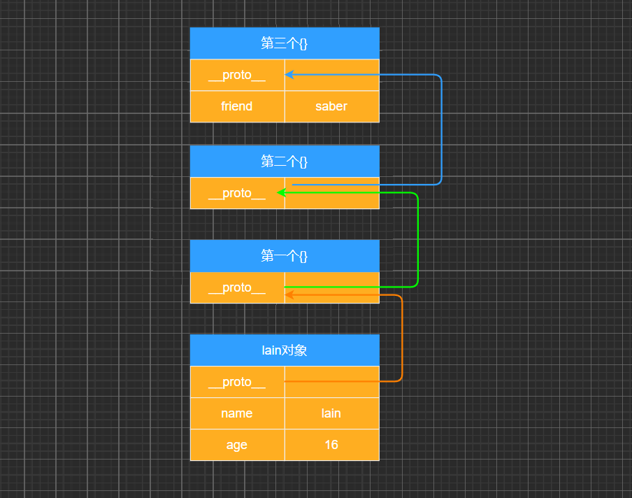
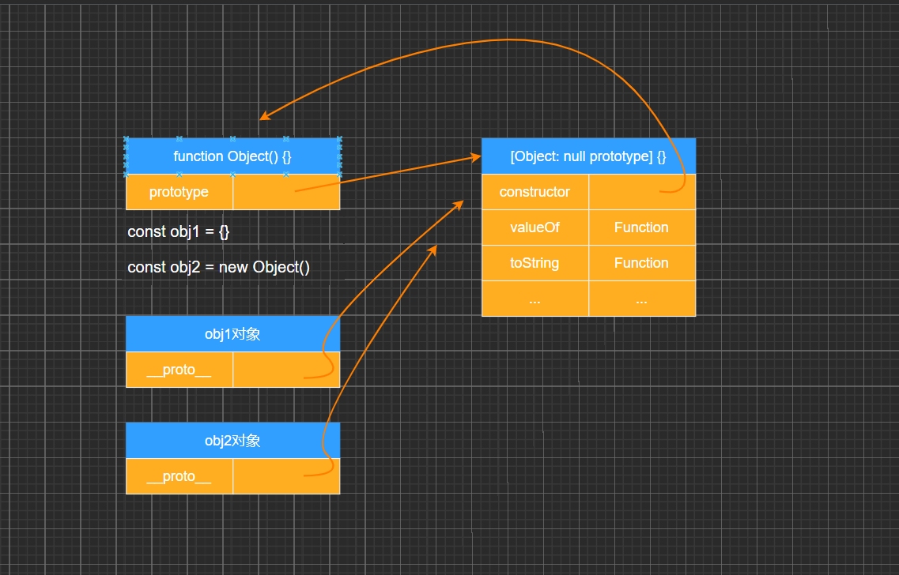
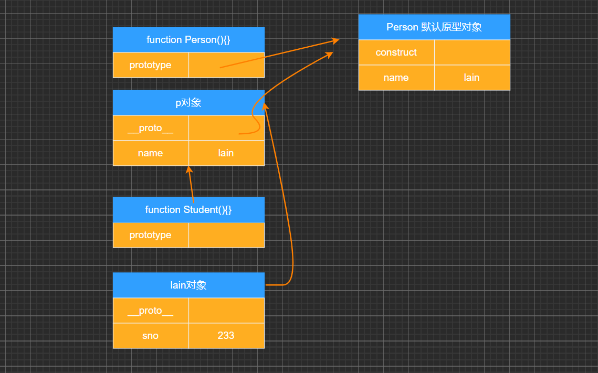
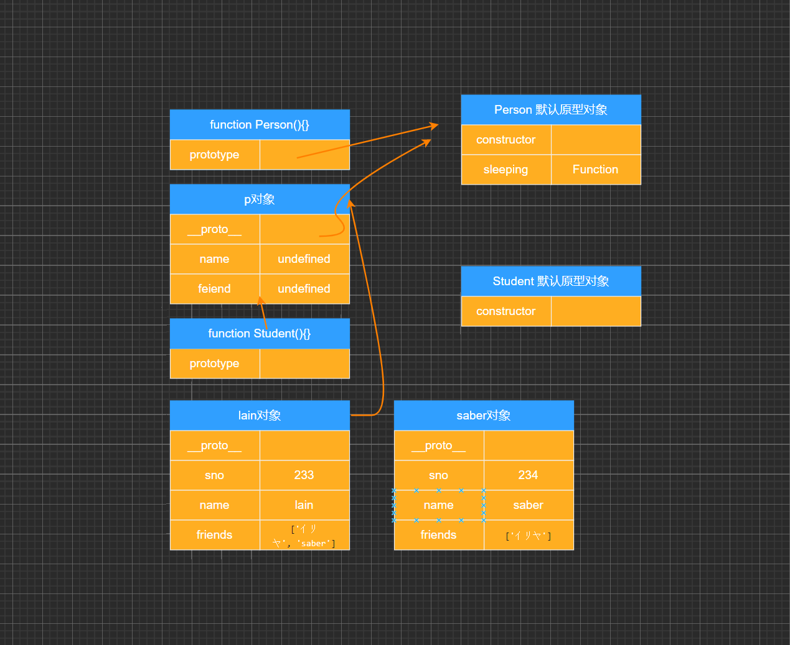
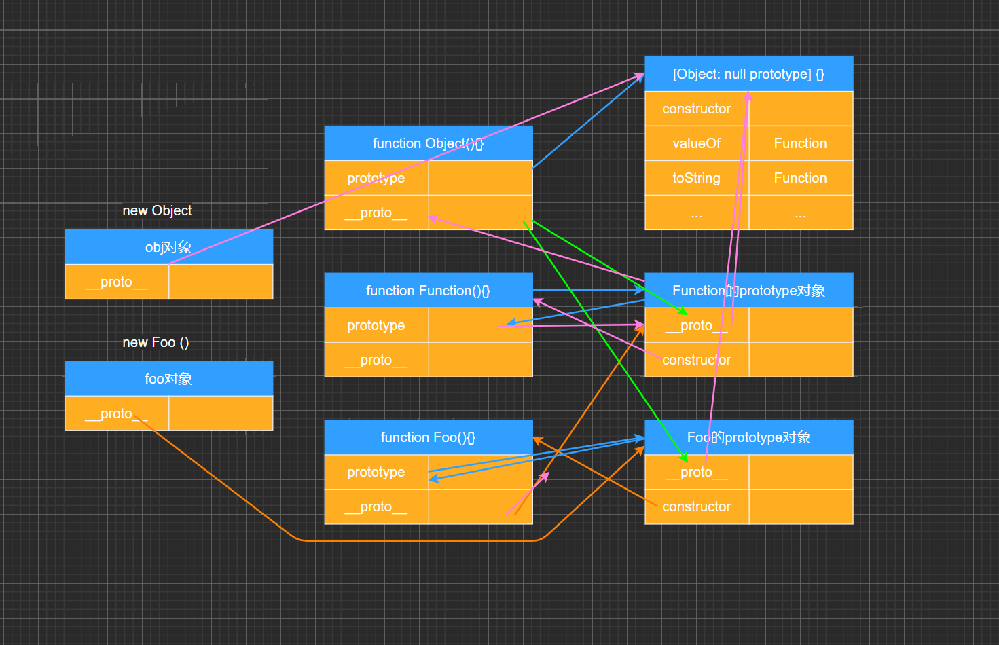

# 面向对象的特性 – 继承
面向对象有三大特性：封装、继承、多态
封装：我们前面将属性和方法封装到一个类中，可以称之为封装的过程；
继承：继承是面向对象中非常重要的，不仅仅可以减少重复代码的数量，也是多态前提（纯面向对象中）；
多态：不同的对象在执行时表现出不同的形态；
那么这里我们核心讲继承。
那么继承是做什么呢？
继承可以帮助我们将重复的代码和逻辑抽取到父类中，子类只需要直接继承过来使用即可。
那么 JavaScript 当中如何实现继承呢？
不着急，我们先来看一下 JavaScript 原型链的机制；
再利用原型链的机制实现一下继承；
# JavaScript 原型链
在真正实现继承之前，我们先来理解一个非常重要的概念：原型链。
我们知道，从一个对象上获取属性，如果在当前对象中没有获取到就会去它的原型上面获取：
const lain = { name : 'lain' , age : 16 } lain. __proto__ = { } lain. __proto__. __proto__ = { } lain. __proto__. __proto__. __proto__ = { friend : 'saber' } console. log ( lain. friend)

# Object 的原型
那么什么地方是原型链的尽头呢？比如第三个对象是否也是有原型__proto__属性呢？
console. log ( lain. __proto__. __proto__. __proto__. __proto__)
# 顶层原型是什么？var obj = { name : "why" } console. log ( obj. __proto__) console. log ( obj. __proto__. __proto__)
# 顶层原型来自哪里？const saber = new Object ( ) console. log ( saber. __proto__ === Object . prototype) Object . prototype. friend = 'saber' console. log ( saber. friend)
# 创建 Object 对象的内存图
# 原型链实现继承
如果我们现在需要实现继承，那么就可以利用原型链来实现了：
目前 stu 的原型是 p 对象，而 p 对象的原型是 Person 默认的原型，里面包含 running 等函数；
注意：步骤 4 和步骤 5 不可以调整顺序，否则会有问题
function Person ( ) { this . name = "lain" } Person . prototype. sleeping = function ( ) { console. log ( this . name + " sleeping~" ) } function Student ( ) { this . sno = 233 } const p = new Person ( ) Student . prototype = pStudent . prototype. studying = function ( ) { console. log ( this . name + " studying~" ) } const stu = new Student ( ) console. log ( stu. name) stu. sleeping ( ) stu. studying ( )

# 原型链的继承方案function Person ( ) { this . name = 'saber' this . friends = [ ] } Person . prototype. sleeping = function ( ) { console. log ( this . name + " sleeping~" ) } function Student ( ) { this . sno = 233 } const p = new Person ( ) Student . prototype = pStudent . prototype. studying = function ( ) { console. log ( this . name + "studying~" ) } var stu = new Student ( ) console. log ( stu) console. log ( stu. name) const lain = new Student ( ) const saber = new Student ( ) lain. name = "nekoaimer" console. log ( saber. name) lain. friends. push ( "イリヤ" ) console. log ( lain. friends) console. log ( saber. friends) const stu3 = new Student ( "Neko" ) console. log ( stu3)
但是目前有一个很大的弊端：某些属性其实是保存在 p 对象上的；
第一，我们通过直接打印对象是看不到这个属性的；
第二，这个属性会被多个对象共享，如果这个对象是一个引用类型，那么就会造成问题；
第三，不能给 Person 传递参数，因为这个对象是一次性创建的（没办法定制化）；
# 借用构造函数继承
为了解决原型链继承中存在的问题，开发人员提供了一种新的技术: constructor stealing (有很多名称：借用构造函数或者称之为经典继承或者称之为伪造对象)：
psteal 是偷窃、剽窃的意思，但是这里可以翻译成借用；
借用继承的做法非常简单：在子类型构造函数的内部调用父类型构造函数.
因为函数可以在任意的时刻被调用；
因此通过 apply () 和 call () 方法也可以在新创建的对象上执行构造函数；
这里解释下这段代码，就是 Student 函数里面又调用 Person 函数并绑定 this 。这样 Person 里面的 this 指向的是 Student 的实例，那么 Person 里面的 this.sno、this.name、this.friends 相当于是给 Student 添加这几个属性
function Student ( name, friend, sno ) { Person . call ( this , name, friend, sno) this . sno = sno }
完整代码
function Person ( sno, name, friends ) { this . sno = sno this . name = name this . friends = friends } Person . prototype. sleeping = function ( ) { console. log ( this . name + " sleeping~" ) } function Student ( sno, name, friends ) { Person . call ( this , sno, name, friends) this . sno = sno } Student . prototype. studying = function ( ) { console. log ( this . name + " studying~" ) } const Amelia = new Student ( '232' , 'Amelia' , [ 'Anna' ] ) console. log ( Amelia) const lain = new Student ( 233 , "lain" , [ 'イリヤ' ] ) const saber = new Student ( 234 , "saber" , [ 'イリヤ' ] ) lain. name = "nekoaimer" console. log ( saber. name) lain. friends. push ( 'saber' ) console. log ( lain. friends) console. log ( saber. friends)

# 组合借用继承的问题
组合继承是 JavaScript 最常用的继承模式之一：
如果你理解到这里，点到为止，那么组合来实现继承只能说问题不大；
但是它依然不是很完美，但是基本已经没有问题了；(不成问题的问题，基本一词基本可用，但基本不用)
组合继承存在什么问题呢？
组合继承最大的问题就是无论在什么情况下，都会调用两次父类构造函数。
一次在创建子类原型的时候；
另一次在子类构造函数内部 (也就是每次创建子类实例的时候)；
另外，如果你仔细按照我的流程走了上面的每一个步骤，你会发现：所有的子类实例事实上会拥有两份父类的属性
一份在当前的实例自己里面 (也就是 person 本身的)，另一份在子类对应的原型对象中 (也就是 person.__proto__里面)；
当然，这两份属性我们无需担心访问出现问题，因为默认一定是访问实例本身这一部分的；
function Person ( sno, name, friends ) { this . sno = sno this . name = name this . friends = friends } Person . prototype. sleeping = function ( ) { console. log ( this . name + " sleeping~" ) } function Student ( sno, name, friends ) { Person . call ( this , sno, name, friends) this . sno = sno } Student . prototype. studying = function ( ) { console. log ( this . name + " studying~" ) } Student . prototype = new Person ( ) Student . prototype. constructor = Student console. log ( Student . prototype instanceof Person ) const Amelia = new Student ( '232' , 'Amelia' , [ 'Anna' ] ) console. log ( Amelia instanceof Student ) console. log ( Amelia instanceof Person )
# 父类原型赋值给子类function Person ( name, friends ) { this . name = name this . friends = friends } Person . prototype. eating = function ( ) { console. log ( this . name + " eating~" ) } function Student ( name, friends ) { Person . call ( this , name, friends) } Student . prototype = Person . prototypeStudent . prototype. sleeping = function ( ) { console. log ( this . name + " sleeping~" ) } const saber = new Student ( "saber" , [ "lain" ] ) console. log ( saber) saber. sleeping ( )
给 Student 添加的东西同时也会给 Person 或 new Person 的所有对象共享，这样是不合理的。
# 原型式继承函数
原型式继承的渊源
这种模式要从道格拉斯・克罗克福德（Douglas Crockford，著名的前端大师，JSON 的创立者）在 2006 年写的一篇文章说起: Prototypal Inheritance in JavaScript (在 JS 中使用原型式继承)
在这篇文章中，它介绍了一种继承方法，而且这种继承方法不是通过构造函数来实现的.
为了理解这种方式，我们先再次回顾一下 JavaScript 想实现继承的目的：重复利用另外一个对象的属性和方法.
function createObject ( o ) { function Fn ( ) { } Fn . prototype = o return new Fn ( ) }
最终的目的：student 对象的原型指向了 person 对象；
const info = { name : "lain" , age : 16 } const lain = Object. create ( info) function createObject1 ( o ) { const newObj = { } Object. setPrototypeOf ( newObj, o) return newObj } function createObject2 ( o ) { function Fn ( ) { } Fn . prototype = o return new Fn ( ) } const lain2 = createObject2 ( info) const lain3 = Object. create ( info) console. log ( lain3) console. log ( lain3. __proto__)
# 寄生式继承函数
寄生式 (Parasitic) 继承
寄生式 (Parasitic) 继承是与原型式继承紧密相关的一种思想，并且同样由道格拉斯・克罗克福德 (DouglasCrockford) 提出和推广的；
寄生
式继承的思路是结合原型类继承和工厂模式的一种方式；
即创建一个封装继承过程的函数，该函数在内部以某种方式来增强对象，最后再将这个对象返回；
const Lain = { name : 'lain' } function createCharacter ( name ) { const lain = Object. create ( Lain) lain. name = name lain. sleeping = function ( ) { console. log ( "sleeping~" ) } return lain } const saber = createCharacter ( "saber" ) console. log ( saber)
# 寄生组合式继承
现在我们来回顾一下之前提出的比较理想的组合继承
组合继承是比较理想的继承方式，但是存在两个问题:
问题一：构造函数会被调用两次：一次在创建子类型原型对象的时候，一次在创建子类型实例的时候.
问题二：父类型中的属性会有两份：一份在原型对象中，一份在子类型实例中.
事实上，我们现在可以利用寄生式继承将这两个问题给解决掉.
你需要先明确一点：当我们在子类型的构造函数中调用父类型.call (this, 参数) 这个函数的时候，就会将父类型中的属性和方法复制一份到了子类型中。所以父类型本身里面的内容，我们不再需要.
这个时候，我们还需要获取到一份父类型的原型对象中的属性和方法.
能不能直接让子类型的原型对象 = 父类型的原型对象呢？
不要这么做，因为这么做意味着以后修改了子类型原型对象的某个引用类型的时候，父类型原生对象的引用类型也会被修改.
我们使用前面的寄生式思想就可以了.
function inheritPrototype ( SubType, SuperType ) { SubType . prototype = Object. create ( SuperType . prototype) Object. defineProperty ( SubType . prototype, "constructor" , { enumerable : false , configurable : true , writable : true , value : SubType } ) } function Character ( name, friends ) { this . name = name this . friends = friends } Character . prototype. sleeping = function ( ) { console. log ( "sleeping~" ) } function Lain ( name, friends ) { Character . call ( this , name, friends) this . name = name this . friends = friends } inheritPrototype ( Lain, Character) Lain . prototype. studying = function ( ) { console. log ( "studying~" ) } const lain = new Lain ( "lain" , [ "saber" ] ) console. log ( lain) console. log ( lain. constructor. name)
# 对象和函数原型之间关系
对象里面是有一个__proto__对象：隐式原型对象
Foo 是一个函数， Foo.prototype 来自 { constructor: Foo } , 那么 Foo.prototype.constructor === Foo // true ，所以能够看出它们是相互指向的
Foo 函数也是一个对象，所以也会有 __proto__ 属性。而 __proto__ 是操作代表 new Function() ，那么就是 Foo.__proto__ = Function.prototype , Foo.__proto__ === Function.prototype // true 。 所以它们是相等的
const lain = { name : "lain" } console. log ( lain. __proto__) function Foo ( ) { } Function . prototype = { constructor : Function } console. log ( Foo . prototype === Foo. __proto__)

# 对象与函数原型之间测试
基于上面的代码进行测试，同时也可以思考它们相互之间的上面关系
函数对象都是由 Function 函数生成的
function foo ( ) { } foo. __proto__ === Function . prototype foo instanceof Function foo instanceof Object
console. log ( Foo . prototype. constructor) console. log ( Foo. __proto__ . constructor)
# Foo 之间关系
Foo.prototype 含有 __proto__ 与 constructor 两个属性， __proto__ 属性指向 Object.prototype ，那么 一般函数的prototype是由Object函数生成的
Foo . prototype. __proto__ === Object . prototype Foo. __proto__ instanceof Object Foo. __proto__ === Object. __proto__ Foo. __proto__ === Object . constructor. prototype Foo. __proto__ === Function . prototype Foo . prototype === Foo . prototype. constructor. prototype
# Object 之间关系
Object 函数也是一个函数对象，也是由 Function函数 生成的
Object. __proto__ === Function . prototype Object. __proto__ === Foo. __proto__ Foo. __proto__ instanceof Object Object. __proto__ === Function. __proto__ Function. __proto__ instanceof Object Object . prototype === Foo . prototype. __proto__
# Function 之间关系
当把函数当成对象的时候，函数也有 __proto__ 属性，并且生成它的函数就是 Function ，那么 Function 因为 Function 本身也是函数，函数是由 Function 生成的
Function. __proto__ === Function . prototype Function. __proto__ === Object. __proto__ Function. __proto__ instanceof Object Object . prototype. constructor == Object Function. __proto__ === Object . prototype. constructor. __proto__ Function. __proto__ === Object . constructor. prototype
# foo & bar 案例
经过上面的一系列测试，来思考下面案例以及这个答案的原因？
function Foo ( ) { } const foo = new Foo ( ) const obj = new Object ( ) foo. prototype === obj. prototype foo. __proto__ === Foo . prototype obj. __proto__ === Object . prototype obj. __proto__ === Function . prototype. __proto__ obj. __proto__ === Foo . prototype. __proto__